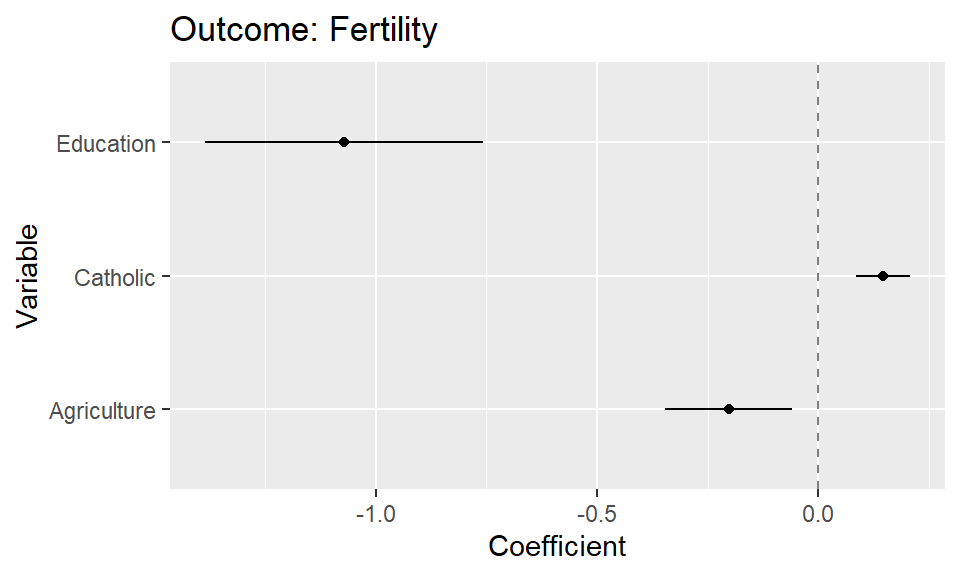
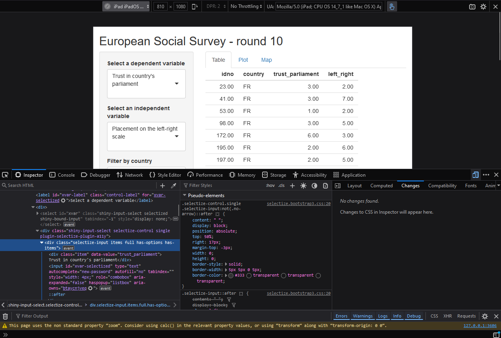
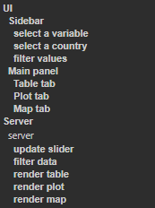

Good practices when building your own app
- Learning outcomes:
- Good practices for Shiny programming
- Typical pitfalls to watch out for
- Useful stuff for everyday Shiny workflows
1 Use Large Language Models (LLMs)
- LLMs increase productivity and we recommend using it regularly (get used to it)
1.1 Attention: Hallucination
- Attention: Always cross-validate the information given by a LLM
- Why? Hallucination.. (see characterization statements on Wikipedia)
- “a tendency to invent facts in moments of uncertainty” (OpenAI, May 2023)
- “a model’s logical mistakes” (OpenAI, May 2023)
- fabricating information entirely, but behaving as if spouting facts (CNBC, May 2023)
- “making up information” (The Verge, February 2023)
- Why? Hallucination.. (see characterization statements on Wikipedia)
- Very good overview on Wikipedia
- Discussions in (Zhang2023-ok?), (Huang2023-zf?) and (Metz2023-qz?)
- Problem less relevant when asking LLMs for function code because you check/test it yourself
1.2 Avaible LLMs
- Closed-source
- ChatGPT X (OpenAI, ~Microsoft): https://chat.openai.com/
- Gemini (Google) https://gemini.google.com/
- Amazon Titan: https://aws.amazon.com/bedrock/titan/
- Open-source
- HuggingChat: https://huggingface.co/chat/
- LAMA: https://github.com/facebookresearch/LAMA
- Curated list of papers about large language models
- Top Open-Source LLMs for 2024 and Their Uses
1.3 Useful prompts
- LLMs can be used to…
- …code & understand code.
- …solve data management tasks.
- …solve data visualization tasks.
- …solve modeling tasks.
- …understand statistical theory.
- Some exemplary prompts in the sections below.
1.4 Prompts: code & understand code/functions
Please explain what the shiny app below does. How does it work and what is it's logic.
ui <- fluidPage(
textInput("name", "What's your name?"),
textOutput("greeting")
)
server <- function(input, output, session) {
output$greeting <- renderText({
paste0("Hello ", input$name, "!")
})
}
shinyApp(ui, server)Followed by:
Please add ... to the shiny app.Please explain the hyperparamters in this model:
xgb_spec <- boost_tree(
trees = 1000,
tree_depth = tune(), min_n = tune(),
loss_reduction = tune(), ## first three: model complexity
sample_size = tune(), mtry = tune(), ## randomness
learn_rate = tune() ## step size
) %>%
set_engine("xgboost") %>%
set_mode("classification")Followed by:
Please further explain the learn_rate.
1.5 Prompts: Data management & preparation
Please provide dplyr code to rename the following variables and give them better names (lowercaps). Below is the codebook:
pdwrk - Doing last 7 days: paid work
edctn - Doing last 7 days: education
uempla - Doing last 7 days: unemployed, actively looking for job
uempli - Doing last 7 days: unemployed, not actively looking for job
dsbld - Doing last 7 days: permanently sick or disabled
rtrd - Doing last 7 days: retired
cmsrv - Doing last 7 days: community or military service
hswrk - Doing last 7 days: housework, looking after children, others
dngoth - Doing last 7 days: other
dngref - Doing last 7 days: refusal
dngdk - Doing last 7 days: don't know
dngna - Doing last 7 days: no answerHow do I need to prepare and preprocess the data if I want to built a Naive Bayes classifier?
What is particular in data preparation for Naive Bayes that is not necessary for other machine learning models?
How should I ideally preprocess the data that I feed into a Naive Bayes classifier?
I want to build a Naive Bayes Classifier. Please outline the preprocessing steps that you would recommend and provide tidymodels recipe code that includes those step.
Please write the code into a single recipe.1.6 Prompts: Data visualization
I have a dataset called "data" that includes the variable age. Please provide me with ggplot code to produce a histogram.Please explain the ggplot2 code (add comments to the code).I want to change the x-axis lables (angle 50%) in the ggplot2 code below:I can I encode data dimensions in a graph? What possibilities do I have?How can I ideally visualize a linegraph where the two lines are perfectly overlapping each other but I want to visualize just that.How can I translate the code below when I want to use the sf package in R instead of rgdal?
readOGR(dsn="www/data", layer="VG250_GEM", encoding = "ASCII", verbose = FALSE)1.6.1 ChatGPT4o: Upload data & generate plot
Load the data into R (here we use the preloaded
swissdataset)Run the code below
# Load necessary packages
# install.packages("synthpop")
library(datasets)
library(synthpop)
library(readr)
# Load the dataset
data <- swiss # load your own dataset here
# View the original swiss dataset
head(data)
# Generate synthetic data to anonymize the original dataset
# The syn function will generate synthetic data while preserving the structure and statistical properties
synth_data <- syn(data)
# View the synthetic data
head(synth_data$syn)
# Replace the original data with the synthetic data
data <- synth_data$syn
# View the modified dataset to ensure it has been replaced correctly
head(data)
# Save the new dataset locally
write_csv(data, "data_fake.csv")- Upload
data_fake.csvand Figure 1 (this is just an example) into ChatGPT4o.
- Use the following prompt. If the plot is not based on that particular dataset, i.e., include the variable names of the dataset, you may have to also add which variables should be mapped in which way.
I uploaded a dataset and a plot. Please provide me the ggplot2 code that I need to produce that plot based on the data in one code chunk.
- As a follow-up you can refine the plot code through prompts (
"Please omit the intercept from the plot").
1.7 Prompts: Modeling
What is the difference between a logistic regression model and naive bayes in the machine learning context?
Which machine learning models that we can use for classification have a problem with class imbalance?2 Use the browser inspector (Jonas)
- Browser inspectors are an extremely powerful tool that goes far beyond the scope of this workshop
- It can be used to take a deep look at a website
- What colors and fonts are used?
- How would the Shiny app look like on different screen sizes?
- How would the Shiny app look like to color-blind people?
- How are UI elements translated to HTML and CSS?
- How are widths and heights translated to pixels?
- Which HTTP requests are sent when running the Shiny app?
- Does my website evoke any client-side errors?
- … and a lot more
2.1 Browser inspectors in the wild
- Every popular browser has its own implementation of an inspector

2.2 Pros and Cons
- Inspectors are useful for:
- Conveying an understanding of essential HTML and CSS
- Fine-tuning the UI of a Shiny app
- Implementing corporate designs
- Inspectors are excessive if:
- The goal is primarily to get a functioning app
- Exploring a new elaborate tool beyond Shiny is a bit too much
3 Organize your code
- Shiny code becomes messy really quick!
- It is even more important than in normal code to keep code clean and tidy
- Why should I organize my code?
- It is easier for colleagues to quickly grasp what your code does
- It is easier for you to get back to your project after some time
- Programming with organized code is much faster and much more fun
3.1 Functional programming
- Wrap code in functions if:
- It is repeated more than two times
- It is complex and might profit from abstraction
- Bad:
- Good:
3.2 Stick to a style guide
- Adopting a consistent coding style drastically improves readability for yourself and contributors
- The styler and lintr packages automatically check your code for style inconsistencies, bad practictes, and possible syntactic/semantic errors
- The following code is valid, but deciphering what’s going on might take a while
3.3 Annotate your code
- Even in smaller apps, Shiny code is multiple hundred lines long
- RStudio annotations can help navigate large R code files

3.4 Modularize your Shiny code
- If your Shiny app is divided into multiple tabs or sections, it might make sense to wrap it into modules
- By modularizing, you divide a large Shiny app into multiple smaller pieces that are isolated from each other
- Modularization is a very advanced topic and there is an entire chapter in Mastering Shiny – but it is good to know that it’s possible

3.5 Build your Shiny app as a package
- This tip is particularly useful for larger apps
- The idea is to build a robust scaffold around the Shiny app
- A number of R packages specialize on this task: Rhino golem, and leprechaun
- Benefits:
- Automatically handles dependencies, no more
libraryandthere is no package called ‘xxx’ - Facilitates sharing Shiny apps without deployment
- Supports multiple Shiny apps in one app
- Enables testing workflows and thus more robust code
- All R code files in one place
- Automatically handles dependencies, no more